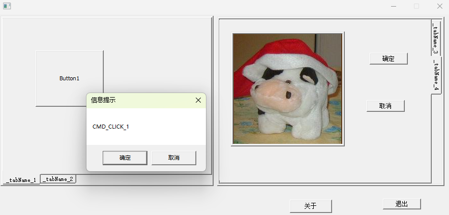

Windows API编程中TabControl控件的应用
作者 刘文庆
今天的文章有点老掉牙，三十多年前的编程技术，之所以谈论这个话题，作者在编写基于windows API的OpenGL例子程序过程中，准备用到TabControl控件，发现针对API函数直接设计这种应用类型的操作界面很困难，这样真正意识到Delphi和C++Builder的强大，基本上将用户从设计复杂的界面上解脱出来，后来的C# .Net也基本实现的这一目标，说到MFC对API应用的封装，虽然将TabControl控件封装为一个类，简化的程序设计的困难，还是不如以上两个产品优越，作为程序员应该感谢.Net之父安德斯·海尔斯伯格（Anders Hejlsberg Borland公司的创始人），该大拿太伟大了，是真正理解底层系统设计到应用设计中间桥梁的大家。

OpenGL例子程序之所以选择Window API函数完成界面的开发演示，是以前的程序基于MFC类库实现的见面，发现MFC需要安装多个开发包，作为初学者有一定环境配置难度，编译器更改会造成重新编译困难，而选择无界面的freeGlut或GLEW类库，编写的程序没有操作界面，多OpenGL程序中用到的参数不能可视化调整，而选择C++builder或C# .Net通用性较弱，为此选择纯正的WndowsAPI函数开发演示程序，通用性带来了很大的提高，各种支持windows编程的C++开发环境均能完成源程序的编译运行。
为简化TabControl控件的使用，作者在controls控件集基础上增加了两个控件：
① TabControl控件源代码如下：
x1class TabControl : public ControlBase2{3public:4TabControl() : ControlBase()5{6// ThisParentProc = NewParentProc;7//8}9TabControl(HWND parent, int id, bool visible = true) : ControlBase(parent, id, visible)10{11SetGetTabControl(handle, this);12}13virtual ~TabControl()14{15if (hTabPages != nullptr)16{17free(hTabPages);18hTabPages = nullptr;19hVisiblePage = nullptr;21}22if (tabNames != nullptr)23{24for (int i = 0; i < m_TabpageCount; i++)25{26if (tabNames[i] != nullptr)27{28delete[] tabNames[i];29tabNames[i] = 0;30}31}32free(tabNames);33tabNames = nullptr;34}35if (tabPageResourceID != nullptr)37{38free(tabPageResourceID);39tabPageResourceID = nullptr;40}41}42void set(HWND parent, int id, const int TabpageCount)44{45static TCITEM tie;46this->parent = parent;48this->id = id;49m_TabpageCount = TabpageCount;51handle = GetDlgItem(parent, id);52SetGetTabControl(handle, this);54// hTabPages = new HWND[m_TabpageCount];56hTabPages = (HWND*)malloc(m_TabpageCount*sizeof(HWND));57m_pTabPageObject = (TabPage**)malloc(m_TabpageCount * sizeof(TabPage*));59//tabNames = new LPWSTR[m_TabpageCount];61tabNames = (LPWSTR*)malloc(m_TabpageCount * sizeof(LPWSTR));62//tabPageResourceNames = new LPWSTR[m_TabpageCount];63tabPageResourceID = (int*)malloc(m_TabpageCount * sizeof(int));64for (int i = 0; i < m_TabpageCount; i++)66{67hTabPages[i] = nullptr;68m_pTabPageObject[i] = nullptr;69tabNames[i] = nullptr;70tabPageResourceID[i] = 0;71}72}74static BOOL TabControl_Notify(HWND hDlg, UINT message, WPARAM wParam, LPARAM lParam)75{76NMHDR* nm = (NMHDR*)lParam;77TabControl* pTabControl = SetGetTabControl(nm->hwndFrom);78if (pTabControl != nullptr)79{80return pTabControl->InsideNotify(nm);81}82return FALSE;83}84void TabControl_OnSize(const HWND hwnd, UINT state, int cx, int cy)85{86for (int i = 0; i < m_TabpageCount; i++)88{89if (m_pTabPageObject[i] != nullptr)90{91if (blStretchTabs)92m_pTabPageObject[i]->StretchTabPage(handle, i);93else94m_pTabPageObject[i]->CenterTabPage(handle, i);95}96}97}99private:100friend class TabPage;101HWND hVisiblePage;102HWND* hTabPages=nullptr;104TabPage** m_pTabPageObject = nullptr;105LPWSTR* tabNames = nullptr;107int* tabPageResourceID = nullptr;108int m_TabpageCount = 0;109BOOL blStretchTabs=TRUE;110static TabControl* SetGetTabControl(const HWND _hwnd = nullptr, TabControl* p = nullptr)112{113static std::vector<TabControl*> sTabControlArray;114if (p != nullptr)115{116std::vector<TabControl*>::iterator pIt = sTabControlArray.begin();117while (pIt != sTabControlArray.end())118{119if (*pIt == p)120break;121pIt++;122}123if (pIt == sTabControlArray.end())124{125sTabControlArray.push_back(p);126return p;127}128else129return *pIt;130}131else if (_hwnd != nullptr)132{133std::vector<TabControl*>::iterator pIt = sTabControlArray.begin();134while (pIt != sTabControlArray.end())135{136if ((*pIt)->handle == _hwnd)137break;138pIt++;139}140if (pIt == sTabControlArray.end())141{142return nullptr;143}144else145{146return *pIt;147}148}149else150return nullptr;151}152// Function pointer to Tab Page Size Proc154VOID TabControl_GetClientRect(HWND hwnd, RECT* prc);157BOOL InsideNotify(LPNMHDR pnm);159VOID TabCtrl_OnKeyDown(LPARAM lParam);160BOOL TabCtrl_OnSelChanged(VOID);161BOOL CenterTabPage(const HWND hTab, INT iPage)164{165RECT rect, rclient;166TabControl_GetClientRect(hTab, &rect); // left, top, width, height169// Get the tab page size171GetClientRect(hTabPages[iPage], &rclient);172rclient.right = rclient.right - rclient.left;// width174rclient.bottom = rclient.bottom - rclient.top;// height175rclient.left = rect.left;176rclient.top = rect.top;177// Center the tab page, or cut it off at the edge of the tab control(bad)179if (rclient.right < rect.right)180rclient.left += (rect.right - rclient.right) / 2;181if (rclient.bottom < rect.bottom)183rclient.top += (rect.bottom - rclient.bottom) / 2;184// Move the child and put it on top186BOOL hResult =SetWindowPos(hTabPages[iPage], HWND_TOP,187rclient.left, rclient.top, rclient.right, rclient.bottom,1880);189if (m_pTabPageObject[iPage] != nullptr)190{191m_pTabPageObject[iPage]->CenterTabPage(hTabPages[iPage], iPage);192}193return hResult;195}196BOOL StretchTabPage(const HWND hTab, INT iPage)199{200RECT rect;201TabControl_GetClientRect(hTab, &rect); // left, top, width, height203// Move the child and put it on top205BOOL hResult = SetWindowPos(hTabPages[iPage],206HWND_TOP,207rect.left, rect.top, rect.right, rect.bottom,2080);209if (m_pTabPageObject[iPage] != nullptr)211{212m_pTabPageObject[iPage]->StretchTabPage(hTabPages[iPage], iPage);213}214return hResult;215}216};
TabControl控件向用户暴漏了一下几个方法：
void set(HWND parent, int id, const int TabpageCount)；初始化函数，
HWND parent 父窗口句柄
int id 资源文件的ID号
const int TabpageCount TabPage数量
static BOOL TabControl_Notify(HWND hDlg, UINT message, WPARAM wParam, LPARAM lParam)：父窗口消息循环中需要添加的Notify处理事件函数，应用例子如下：
xxxxxxxxxx71virtual void Notify_Event(HWND hDlg, UINT message, WPARAM wParam, LPARAM lParam)2{3if (((INT)wParam == TAB_CONTROL_1) || ((INT)wParam == TAB_CONTROL_2)) //这里也可以用一个NMHDR *nm = (NMHDR *)lParam这个指针来获取 句柄和事件4{ //读者可自行查找NMHDR结构5Win::TabControl::TabControl_Notify(hDlg, message, wParam, lParam);6}7}
void TabControl_OnSize(const HWND hwnd, UINT state, int cx, int cy)；窗口放大缩小时需要调用的函数，例子代码如下：
xxxxxxxxxx51virtual void Resize_Event(HWND hDlg, UINT message, WPARAM wParam, LPARAM lParam)2{3m_TabControl_1.TabControl_OnSize(hDlg, wParam, LOWORD(lParam), HIWORD(lParam));4m_TabControl_1.TabControl_OnSize(hDlg, wParam, LOWORD(lParam), HIWORD(lParam));5}
②TabPage控件源代码如下：
xxxxxxxxxx741class TabPage : public ControlBase2{3public:5TabPage() : ControlBase() {}6TabPage(HWND parent, int id, bool visible = true) : ControlBase(parent, id, visible)7{8}9virtual ~TabPage();10void set(TabControl* pTabControl,LPWSTR _tabName, DWORD id);13protected:14TabControl* m_pTabControl = nullptr;15DWORD tabPageResourceID = 0;16private:17friend class TabControl;18// Function pointer to Parent Dialog Proc19INT_PTR(CALLBACK* TabPageProc)(HWND, UINT, WPARAM, LPARAM) = nullptr;20INT_PTR CALLBACK DefaultTabPage_DlgProc(HWND hwndDlg, UINT msg, WPARAM wParam, LPARAM lParam)23{24switch (msg)25{26HANDLE_MSG(hwndDlg, WM_INITDIALOG, TabPage_OnInitDialog);27HANDLE_MSG(hwndDlg, WM_SIZE, TabPage_OnSize);28HANDLE_MSG(hwndDlg, WM_COMMAND, TabPage_OnCommand);29HANDLE_MSG(hwndDlg, WM_LBUTTONDOWN, TabPage_OnLButtonDown);30//// TODO: Add TabPage dialog message crackers here...31default: return UserTabPageMessageProcess(hwndDlg, msg, wParam, lParam);33}34return FALSE;36}37virtual INT_PTR UserTabPageMessageProcess(HWND hwnd, UINT msg, WPARAM wParam, LPARAM lParam)38{39return FALSE;41}42virtual VOID TabPage_OnCommand(HWND hwnd, INT id, HWND hwndCtl, UINT codeNotify)43{44}46virtual BOOL TabPage_OnInitDialog(HWND hwnd, HWND hwndFocus, LPARAM lParam)47{48// We handle this message so that it is not sent to the main dlg proc49// each time a tab page is initialized.50return DefWindowProc(hwnd, WM_INITDIALOG, (WPARAM)hwndFocus, lParam);52}53virtual VOID TabPage_OnSize(HWND hwnd, UINT state, INT cx, INT cy)57{58}60virtual VOID TabPage_OnLButtonDown(HWND hwnd, BOOL fDoubleClick, INT x, INT y, UINT keyFlags)62{63}65virtual BOOL StretchTabPage(HWND, INT)67{68return TRUE;69}70virtual BOOL CenterTabPage(HWND, INT)71{72return TRUE;73}74};
TabPage控件只向用户暴漏了一个函数：
void set(TabControl* pTabControl,LPWSTR _tabName, DWORD id);
TabControl* pTabControl：TabPage控件附着的TabControl控件指针
LPWSTR _tabName：与之关联的标签字符串
DWORD id：TabPage资源ID号
TabPage控件需要用户重载一下虚函数，以处理相关的事件：
virtual VOID TabPage_OnCommand(HWND hwnd, INT id, HWND hwndCtl, UINT codeNotify)：对应WM_COMMAND事件
virtual BOOL TabPage_OnInitDialog(HWND hwnd, HWND hwndFocus, LPARAM lParam)对应WM_INITDIALOG事件
virtual VOID TabPage_OnSize(HWND hwnd, UINT state, INT cx, INT cy)对应WM_SIZE事件
virtual VOID TabPage_OnLButtonDown(HWND hwnd, BOOL fDoubleClick, INT x, INT y, UINT keyFlags)对应WM_LBUTTONDOWN事件
virtual INT_PTR UserTabPageMessageProcess(HWND hwnd, UINT msg, WPARAM wParam, LPARAM lParam);需要处理的其他事件函数
这两个控件使用的例子如下：
xxxxxxxxxx1821class TabPage1 : public Win::TabPage2{3public:4virtual VOID TabPage_OnCommand(HWND hwnd, INT id, HWND hwndCtl, UINT codeNotify)5{6if (id == CMD_CLICK_1)7{8::MessageBox(hwnd, L"CMD_CLICK_1", L"信息提示", MB_OKCANCEL);9}10}11};12class TabPage2 : public Win::TabPage13{14public:15virtual VOID TabPage_OnCommand(HWND hwnd, INT id, HWND hwndCtl, UINT codeNotify)16{17if (id == CMD_CLICK_22)18{19::MessageBox(hwnd, L"CMD_CLICK_22", L"信息提示", MB_OKCANCEL);20}21}22};23class TabPage3 : public Win::TabPage24{25public:26virtual VOID TabPage_OnCommand(HWND hwnd, INT id, HWND hwndCtl, UINT codeNotify)27{28if (id == CMD_CLICK_22)29{30::MessageBox(hwnd, L"CMD_CLICK_22", L"信息提示", MB_OKCANCEL);31}32}33};34class TabPage4 : public Win::TabPage35{36public:37virtual VOID TabPage_OnCommand(HWND hwnd, INT id, HWND hwndCtl, UINT codeNotify)38{39if (id == CMD_CLICK_22)40{41::MessageBox(hwnd, L"CMD_CLICK_22", L"信息提示", MB_OKCANCEL);42}43}44};45class TestWinForm :public Win::WinForm46{47public:48Win::Picture m_Picture;49TestWinForm() : Win::WinForm()50{51};53virtual ~TestWinForm()54{55}57virtual void Init_Event(HWND hDlg, UINT message, WPARAM wParam, LPARAM lParam)58{59m_Picture.set(hDlg, IDC_PICTURESTATIC);60HBITMAP hBitmap = LoadBitmap(hInst, MAKEINTRESOURCE(IDB_BITMAP1));61m_Picture.setImage(hBitmap);62m_Picture.show();63}64};65TestWinForm g_TestWinForm;66class WindowsForm :public Win::WinForm67{68private:69Win::Button m_AboutButton;70Win::Button m_CloseButton;71Win::TabControl m_TabControl_1;72TabPage1 m_TabPage_1;73TabPage2 m_TabPage_2;74Win::TabControl m_TabControl_2;75TabPage3 m_TabPage_3;76TabPage4 m_TabPage_4;77public:78WindowsForm() :Win::WinForm()79{80};82virtual ~WindowsForm()83{84}86virtual void Init_Event(HWND hDlg, UINT message, WPARAM wParam, LPARAM lParam)87{88HWND hWnd = hDlg;// ::GetDlgItem(hDlg, IDC_OPENGLVIEW);89m_AboutButton.set(hDlg, IDD_ABOUTBOX);90m_CloseButton.set(hDlg, IDM_EXIT);91m_TabControl_1.set(hDlg, TAB_CONTROL_1, 2);93m_TabPage_1.set(&m_TabControl_1, (const LPWSTR)L"_tabName_1", TAB_CONTROL_1_PAGE_1);94m_TabPage_2.set(&m_TabControl_1, (const LPWSTR)L"_tabName_2", TAB_CONTROL_1_PAGE_2);95m_TabControl_2.set(hDlg, TAB_CONTROL_2, 2);97m_TabPage_3.set(&m_TabControl_2, (const LPWSTR)L"_tabName_3", TAB_CONTROL_1_PAGE_3);98m_TabPage_4.set(&m_TabControl_2, (const LPWSTR)L"_tabName_4", TAB_CONTROL_1_PAGE_4);99return;101};102virtual void Command_Event(HWND hDlg, UINT message, WPARAM wParam, LPARAM lParam)104{105int wmId = LOWORD(wParam);106if (wmId == IDD_ABOUTBOX)107{108//Win::WinForm::ShowModelDialog(IDD_ABOUTBOX, hDlg, About);// Win::WinForm::DialogWindowProc);109g_TestWinForm.Show();110}111else if (wmId == IDM_EXIT)112{113::SendMessageW(hDlg, WM_DESTROY, 0, 0);114}115}116////////////////////////////////////////////////////////117virtual void Notify_Event(HWND hDlg, UINT message, WPARAM wParam, LPARAM lParam)118{119if (((INT)wParam == TAB_CONTROL_1) || ((INT)wParam == TAB_CONTROL_2)) //这里也可以用一个NMHDR *nm = (NMHDR *)lParam这个指针来获取 句柄和事件120{ //读者可自行查找NMHDR结构121Win::TabControl::TabControl_Notify(hDlg, message, wParam, lParam);122}123}124virtual void Resize_Event(HWND hDlg, UINT message, WPARAM wParam, LPARAM lParam)125{126m_TabControl_1.TabControl_OnSize(hDlg, wParam, LOWORD(lParam), HIWORD(lParam));127m_TabControl_1.TabControl_OnSize(hDlg, wParam, LOWORD(lParam), HIWORD(lParam));128}129///////////////////////////////////////////////////////////131};132WindowsForm g_WinForm;134int APIENTRY wWinMain(_In_ HINSTANCE hInstance,138_In_opt_ HINSTANCE hPrevInstance,139_In_ LPWSTR lpCmdLine,140_In_ int nCmdShow)141{142UNREFERENCED_PARAMETER(hPrevInstance);143UNREFERENCED_PARAMETER(lpCmdLine);144// TODO: 在此处放置代码。146// Initialize common controls. Also needed for MANIFEST's.147InitCommonControls();148// 初始化全局字符串149LoadStringW(hInstance, IDS_APP_TITLE, szTitle, MAX_LOADSTRING);150LoadStringW(hInstance, IDC_WINMAINAPP, szWindowClass, MAX_LOADSTRING);151g_WinForm.CreateWindowFromReSource(hInstance, IDD_MAINDIALOG);// , FormMain_DlgProc);153g_TestWinForm.CreateWindowFromReSource(hInstance, IDD_DIALOG1);154return g_WinForm.Run();155//g_pForm.CreateWindowFromReSource(hInstance, IDD_MAINDIALOG, FormMain_DlgProc);156//return g_pForm.Run();157}158// “关于”框的消息处理程序。160INT_PTR CALLBACK About(HWND hDlg, UINT message, WPARAM wParam, LPARAM lParam)161{162UNREFERENCED_PARAMETER(lParam);163switch (message)164{165case WM_INITDIALOG:166{167return (INT_PTR)TRUE;168}169break;170case WM_COMMAND:171if (LOWORD(wParam) == IDOK || LOWORD(wParam) == IDCANCEL)172{173EndDialog(hDlg, LOWORD(wParam));174return (INT_PTR)TRUE;176}177break;178}179return (INT_PTR)FALSE;180}181
作为技术升级，本例子开发借鉴了Delphi程序直接将类成员函数传递给回调函数指针的方法，该方法封装了两个函数：
xxxxxxxxxx711//WndProcRemapUtil.h2#ifndef WNDPROC_REMAP_UTIL_H_3#define WNDPROC_REMAP_UTIL_H_4#include <windows.h>6const SIZE_T PageSize = 4096;8//产生一个代理函数10template <typename T>11inline static WNDPROC MakeObjectInstance(LPVOID AObject, T AMethod)12{13union14{15T MethodAddr;//成员函数指针16LPVOID NomralAddr;//正常指针17}ut;//因为VC不允许成员函数指针转换到普通指针。只能变通的通过union来实现18const unsigned char BlockCode[] = {19#ifdef _WIN64200x55,//{ push rbp }210x48, 0x83, 0xEC, 0x40,//{ sub rsp,0x40 }220x48, 0x8B, 0xEC,//{ mov rbp,rsp }230x48, 0x89, 0x4D, 0x50,//{ mov[rbp + 0x50],rcx }240x89, 0x55, 0x58,//{ mov[rbp + 0x58],edx }250x4C, 0x89, 0x45, 0x60,//{ mov[rbp + 0x60],r8 }260x4C, 0x89, 0x4D, 0x68,//{ mov[rbp + 0x68],r9 }270x48, 0xB9, 0x00, 0x00, 0x00, 0x00, 0x00, 0x00, 0x00, 0x00,//{ mov rcx,AObject }280x48, 0x8B, 0x55, 0x50,//{ mov rdx,[rbp + 0x50] }290x44, 0x8B, 0x45, 0x58,//{ mov r8,[rbp + 0x58] }300x4C, 0x8B, 0x4D, 0x60,//{ mov r9,[rbp + 0x60] }310x48, 0x8B, 0x45, 0x68,//{ mov rax,[rbp + 0x68] }320x48, 0x89, 0x44, 0x24, 0x20,//{ mov[rsp + 0x20],rax }330x49, 0xBB, 0x00, 0x00, 0x00, 0x00, 0x00, 0x00, 0x00, 0x00,//{ mov r11, AMethod }340x49, 0xFF, 0xD3,//{ call r11 }350x48, 0x8D, 0x65, 0x40,//{ lea rsp,[rbp + 0x40] }360x5D,//{ pop rbp }370xC3//{ ret }38#else400x58,//{ pop eax }410x68, 0x00, 0x00, 0x00, 0x00,//{ push AObject }420x50,//{ push eax }430xB8, 0x00, 0x00, 0x00, 0x00,//{ mov eax, AMethod }440xFF, 0xE0//{ jmp eax }45#endif // endif47};48size_t CodeBytes = sizeof(BlockCode);50LPVOID Block = VirtualAlloc(nullptr, PageSize, MEM_COMMIT, PAGE_EXECUTE_READWRITE);51memcpy(Block, BlockCode, CodeBytes);52unsigned char* bBlock = (unsigned char*)Block;53ut.MethodAddr = AMethod;54#ifdef _WIN6455* PLONG64(&bBlock[25]) = LONG64(AObject);56*PLONG64(&bBlock[0x38]) = LONG64(ut.NomralAddr);57#else58* PLONG32(&bBlock[2]) = LONG32(AObject);59*PLONG32(&bBlock[8]) = LONG32(ut.NomralAddr);60#endif61return (WNDPROC)Block;62}63// 释放代理函数65inline static void FreeObjectInstance(WNDPROC wndProc)66{67VirtualFree(wndProc, PageSize, MEM_RELEASE);68}69#endif // !WNDPROC_REMAP_UTIL_H_71
使用例子代码如下：
xxxxxxxxxx21INT_PTR(CALLBACK* DialogWindowProc)(HWND, UINT, WPARAM, LPARAM) = nullptr;2LRESULT(CALLBACK* WindowProc)(HWND hWnd, UINT message, WPARAM wParam, LPARAM lParam) = nullptr;
xxxxxxxxxx41if (DialogWindowProc == nullptr)2{3DialogWindowProc = (DLGPROC)MakeObjectInstance(this, &WinForm::DialogFormProc);4}
xxxxxxxxxx41if (DialogWindowProc == nullptr)2{3DialogWindowProc = (DLGPROC)MakeObjectInstance(this, &WinForm::DialogFormProc);4}
xxxxxxxxxx131virtual ~WinForm()2{3if (DialogWindowProc != nullptr)4{5FreeObjectInstance(DialogWindowProc);6DialogWindowProc = nullptr;7}8if (WindowProc != nullptr)9{10FreeObjectInstance(WindowProc);11WindowProc = nullptr;12}13};
xxxxxxxxxx191WNDCLASSEXW wcex;2wcex.cbSize = sizeof(WNDCLASSEX);4wcex.style = CS_HREDRAW | CS_VREDRAW;6if (lpfnWndProc == NULL)7wcex.lpfnWndProc = DialogWindowProc;8else9wcex.lpfnWndProc = lpfnWndProc;10wcex.cbClsExtra = 0;12wcex.cbWndExtra = 0;13wcex.hInstance = hInstance;14wcex.hIcon = LoadIcon(hInstance, MAKEINTRESOURCE(IDI_hIconID));15wcex.hCursor = LoadCursor(nullptr, IDC_ARROW);16wcex.hbrBackground = (HBRUSH)(COLOR_WINDOW + 1);17wcex.lpszMenuName = MAKEINTRESOURCEW(IDC_SourceDefineWinForm);18wcex.lpszClassName = szWindowClass;19wcex.hIconSm = LoadIcon(wcex.hInstance, MAKEINTRESOURCE(IDI_SMALL));
xxxxxxxxxx41if (lpDialogFunc == NULL)2m_hWnd = CreateDialogIndirect(hInstance, pTemplate, parent, DialogWindowProc);3else4m_hWnd = CreateDialogIndirect(hInstance, pTemplate, parent, lpDialogFunc);
本文章的演示界面如下：工程文件为：WinMainApp1.zip
